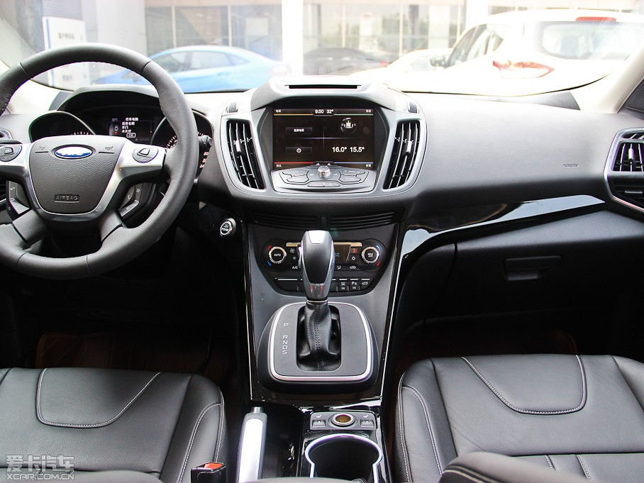
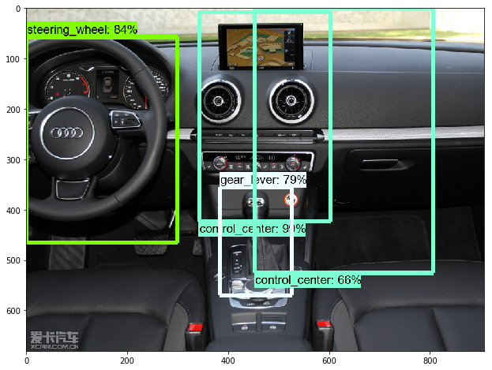
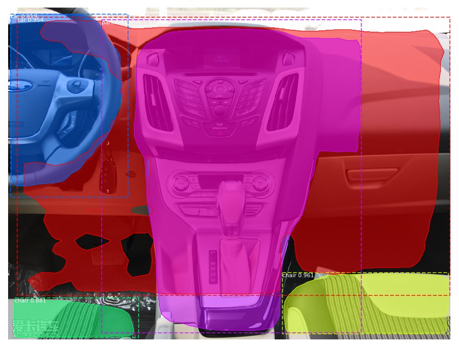

Vehicle Interiors with Deep Learning and Computer Vision
Data Science & Business Analytics MS Program: Summer 2019 Capstone Project : Auto Industry Sponsor
Project Background
In the summer of 2019, a team of graduate students from Wayne State University undertook the task of evaluating and creating state of the art deep learning techniques to identify the interior features of a vehicle.
This type of application can be further worked to include more makes and models of vehicles and additional objects in the vehicle.Determine if a photo of a vehicle’s interior belongs to a specific Make
Determines if a photo of a vehicle’s interior belongs one of 3 Makes. Detect various components within a vehicle’s interior. Create an easily accessible interface that allows users to demo Maintenance - Insurance Claims
Entertainment - Emergency Services
Business Value & Future Work
Image and Object classification have many valuable business uses cases and examples can be found in a variety of domains.
Segmentation opportunities, generative models, scaling pipeline to accommodate new makes and models.
"glyphicon glyphicon-signal logo">
Models
A variety of Deep learning models were used to investigate vehicle interiors. For ease of future use, this work has been conducted using Tensorflow 1.X to complete the Object Detection, and Tensorflow 2.0 for Image Classification and to ease the transition so that the client can enjoy a code base that will be publically maintained.

Inputs
Dashboard images were collected

Object CLassification & Detection

Mask RCNN Inference Example
Steering Wheel, Odometer, Control Center, Gear Lever
METHODOLOGY
Project Steps
Data
With no dataset that is specific to vehicle interiors,the CompCar dataset from the University of Hong Kong was used with permission. The testing photos were collected by the team.
Image Labeling
Labeling is done with open source tools, labelImg. Labeling was required for the bounding boxes for the training dataset. LabelImg outputs XMLfiles in the POSVOC format that is used in localization. This tool can be found at LabelImg
Pre-processing
Images and labels are split into 80% training and 20% testing and then the training dataset is further split for the validation set.
Modeling
Transfer learning was used as a feature extractor and multiple architectures were experimented with to determine the best tradeoff on speed and accuracy. MobileNet and SSD
Tuning
Tuning parameters used were the fine tuning layer, batch size
Results
Accuracy - Precision - Recall - IOU - MAP
Vehicle Interior Object Detection with Deep Learning